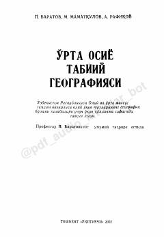

OOO'rta Osiyo tabariyati, fizk-geografik o'rni va tabiiy resurslariga bag'ishlangan oliy o'quv yurtlari uchun o'quv qo'llanma.
Mazkur o'quv qo'llanmada O'rta Osiyo hududining tabiiy unsurlari, ya'ni geologik tuzilishi, relefi, iqlimi, ichki suvlari, tuproq, o'simlik qoplami va hayvonot dunyosi atroflicha tahlil etilgan. Shuningdek, o'lkaning tabiiy-geografik районлаштирилиши, tabiiy resurslardan oqilona foydalanish va ularni muhofaza qilish masalalari yoritilgan. Kitob oliy o'quv yurtlari geografiya yo'nalishi talabalari hamda akademik litsey va kollej o'quvchilari uchun mo'ljallangan.